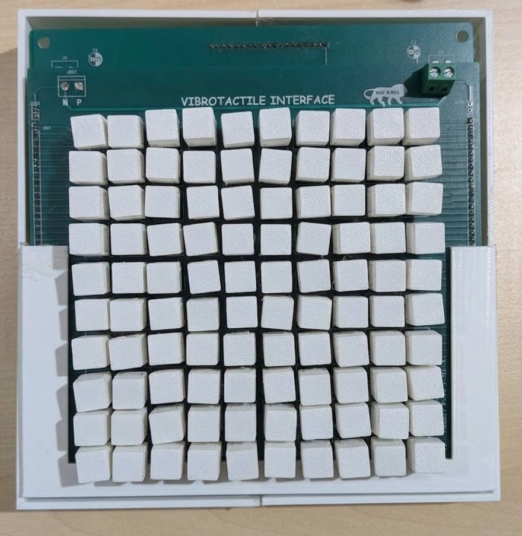
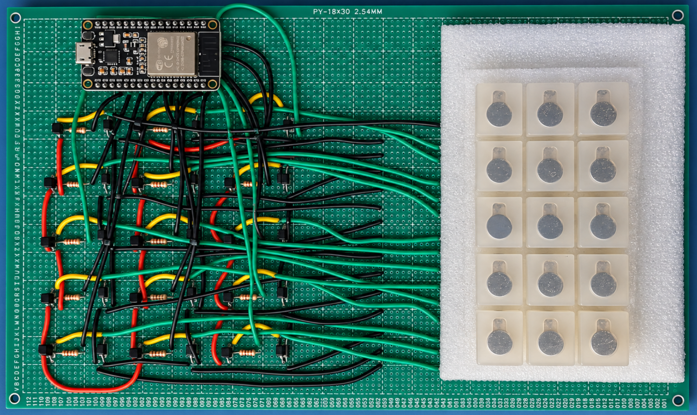
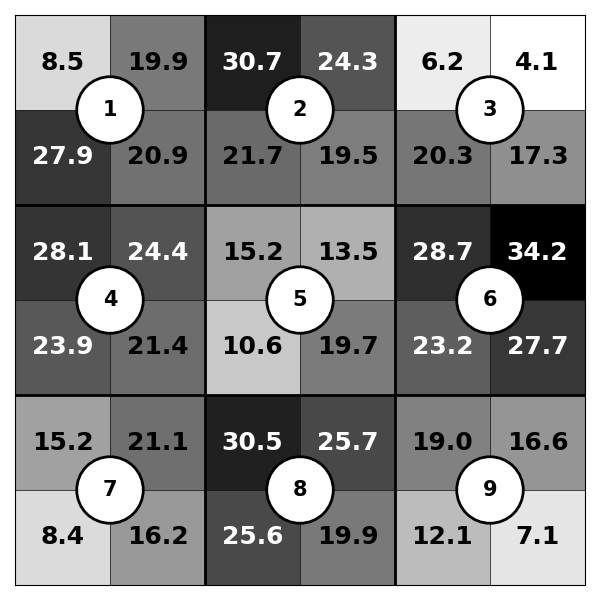
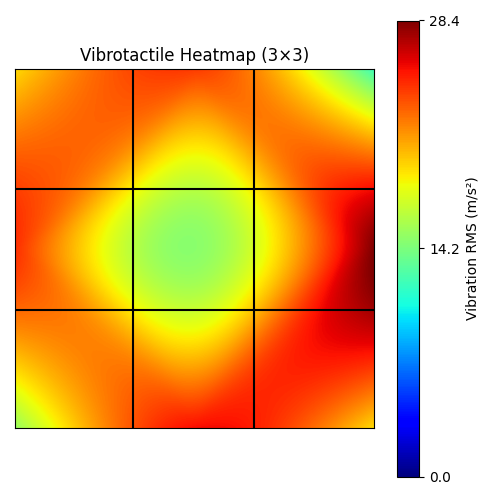
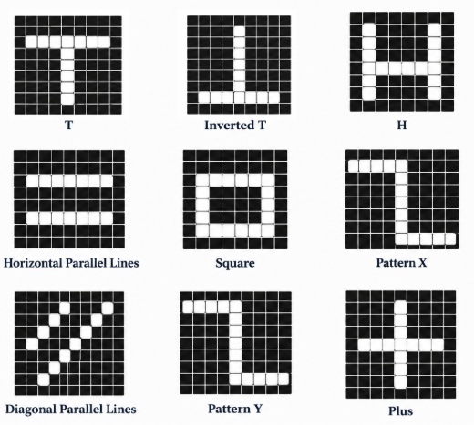
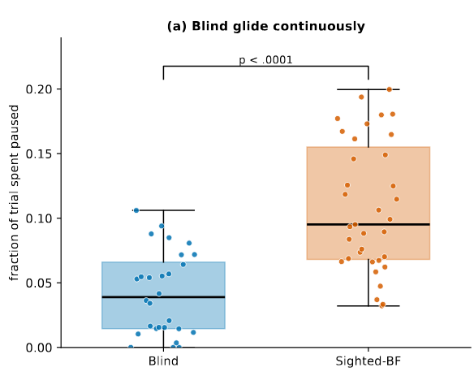

Ongoing research · BITS Pilani Goa
Vibrotactile Interface
A low-cost interface made of vibration motors. It lets blind and low-vision people feel patterns with their fingers through haptic feedback.
- 10 × 10Motor array
- 100Vibration motors
- ESP32Controller
- ~$100Total cost

01. Overview
In classrooms, a lot of learning happens through visualizations such as graphs and geometric shapes. For a visually impaired student, all of this has to be turned into something they can touch, and usually a teacher makes it by hand.
We are building a surface where every small casing(pixel) will have a vibration motor. Turn on the right motors and a shape comes up under your fingers. It can be changed any time.
02. The problem
Embossed diagrams cannot be changed once they are printed. Refreshable tactile displays can change, but they are very costly and rarely available in our schools. Screen readers are good for text, but they cannot tell you where a line goes or how two shapes sit together.
So our question is simple: can we make visual information accessible to visually impaired people through haptic feedback, conveying it through touch in an affordable way?
03. How it works
You choose a shape on a laptop, or simply ask for it by voice. The controller receives it, switches on the right motors, and the shape comes up under your fingers.
-
Laptop appPick or draw a shape and send it.“Show me a square”Voice assistant (LLM)Just ask, like talking to Alexa. The LLM understands and picks the shape.
-
ControllerThe ESP32 gets the shape over Wi-Fi and finds which motors to switch on.
-
Surface vibratesOnly the motors that make up the shape start buzzing.
-
Fingers feel itThe person slides their fingers across and feels the square.
Tiny pixels, tiny buzz!
Phone users, say hello!
Feel it yourself
Try our virtual 10 × 10 surface. Explore the shapes from our study, or draw your own.
Iteration 01 · 5 × 3 surface
Can people read shapes from vibration at all?
- 5 × 3Array
- 15Motors
- 10Participants
We started with 15 coin vibration motors, each placed in a silicone mould with a uniform base layer. We used the surface to represent digits and Braille characters and tested whether people could identify these patterns through touch..
Nine sighted participants and one blind participant took part in the study. Their responses provided initial evidence that people can perceive and distinguish spatial patterns through vibration, giving us a basis to explore more complex shapes and representations

What we built
Each coin motor (an ERM motor, which vibrates by spinning a small off-centre weight) was placed inside a cast silicone (PDMS) capsule. An ESP32 switched the motors on and off through transistors.
What we learnt
We fixed an accelerometer on each pixel and measured how the vibration spreads. Using the surface also showed us four clear problems. Each one changed the next design.
- Too big and too costlyCoin motors needed a lot of space, and silicone casting was expensive.Next time: smaller cylindrical motors in cheap 3D-printed plastic.
- The hand stopped the vibrationWhen the palm rested on the surface, the vibration died down.Next time: a cap that takes the finger’s pressure away from the motor.
- Vibration leaked to neighboursAll motors sat in one silicone block, so one motor shook the others too.Next time: every pixel as its own separate unit.
- Very hard to repairChanging a dead motor needed de-soldering, which a blind user cannot do alone.Next time: motors that plug in and come out by hand.
How the casing changed
We tried a few casing designs, from one solid block to separate pieces with removable caps. Each version taught us something about holding the motors firmly and keeping vibration from leaking.

Measuring the spread


Iteration 02 · 10 × 10 surface
Which shapes can people feel, and how do they read them?
- 10 × 10Array
- 100Motors
- 9Participants
With 100 smaller motors we could show proper shapes: lines, a square, the letter H and more. We tested it with four blind and five sighted people.
Blind and blindfolded sighted people got about the same number right. But blind readers were about three times faster, because they move their fingers smoothly across the surface, like reading Braille.

A pixel that keeps working when you press it
Small cylindrical motors stop vibrating even under light finger pressure. So each pixel has two parts: a base that holds the motor, and a cap on top with a 3 mm gap above the motor. Your finger presses the cap, not the motor, and the vibration still reaches your fingertip.
- 100separate pixels
- ~$100total cost
- 11×11×16mm per pixel
- 3 mmgap above the motor
The electronics
There are two circuit boards stacked together. The top one holds the 100 motors. The bottom one has the ESP32, 13 shift registers (74HC595) and one MOSFET switch for each motor. Each motor plugs into a connector, so it can be taken out without soldering.
How we ran the study
We worked with four blind Braille readers and five sighted people. Sighted people did the test twice, first blindfolded and then with open eyes. There were two practice shapes and seven test shapes. For each shape, people explored the surface and pointed to the matching shape on a 3D-printed reference sheet. Every trial was video-recorded, and two of us analysed 98 trials.
What we found
Blind readers
Smooth, steady finger movement. They paused for only about 4% of the time.
Blindfolded sighted readers
Stop-and-start searching, paused about 10% of the time. Some pressed pixels with eight fingers, like typing on a keyboard.

Some shapes were easy and some were not. Horizontal lines were almost always right. The diagonal was confused even by people who could see it, which tells us the problem is how the shape is drawn on the grid, not the sense of touch.
With open eyes, sighted people became twice as fast (135 s down to 65 s), but their accuracy went up only a little (66% to 80%).
What we learnt
How a shape is drawn on the grid matters more than adding more motors. The surface must let fingers glide easily, and every pixel must work reliably. In the study, some motors became weak because their contact depended on how firmly they sat in the casing. That is exactly what we are working on now.
Iteration 03 · Ongoing work
Can people repair it themselves?
- RepairabilityFocus
- TestingCurrent step
- OngoingStatus
In progress
With 100 motors, sooner or later one will stop working. We don’t want the device to go back to a lab every time that happens.
So we are designing each pixel so that anyone, even without sight, can open it, take out the old motor and put in a new one, with no tools and no soldering. Now we are testing whether people can really do it.
Changing a motor in six steps
- OpenLift the cap with a finger
- RemovePull out the old motor
- TurnMatch the motor’s flat side to a raised ridge
- InsertPush the new motor in
- CloseSnap the cap back
- TestSwitch the pixel on to check it
What we are testing
Blind and sighted people, some who know the device and some who are new to it, replace motors at the corners, edges and middle of the grid. We note whether it works, how long it takes, what mistakes happen (like putting the motor in the wrong way), and how easy it felt.
We are also testing the hardware: whether a replaced pixel works as well as the original, whether the new casing keeps a good electrical contact, and how much vibration still reaches the neighbouring pixels.
Why it matters
Assistive devices are often put aside when they break and nobody nearby can fix them. A device that its own user can repair lasts longer, costs less to keep, and keeps working even where no technician is available.
Who we work with
We do our user studies with these organisations and learn from them. Their members try each prototype, and their feedback decides what we build next.
- RDT AnantapurAnantapur, Andhra Pradesh
- NAB GoaGoa
- Devnar FoundationHyderabad, Telangana
Current direction
Making every pixel easy to repair, testing it with people, and then moving from simple shapes to richer learning material like charts and diagrams.
Related work
An Affordable Vibrotactile Surface for Tactile Figure Recognition: Exploration Strategies of Blind and Sighted Users
CHI 2027 (under review)